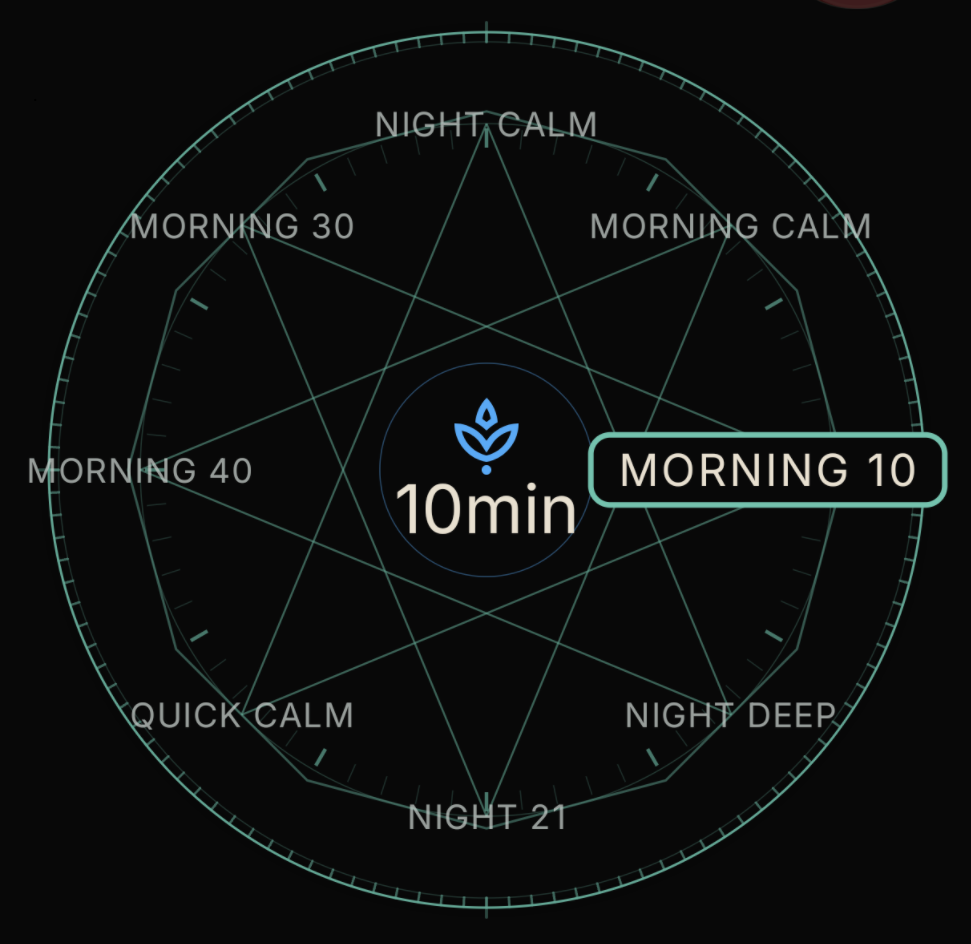
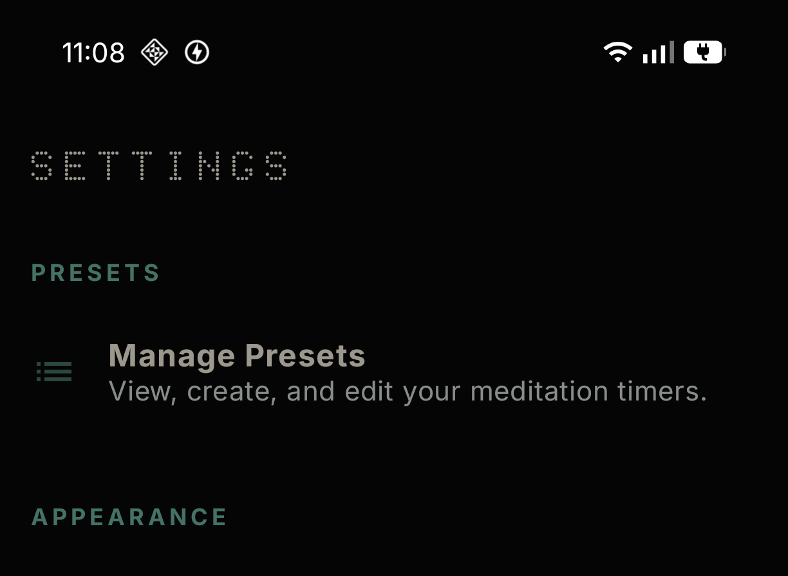
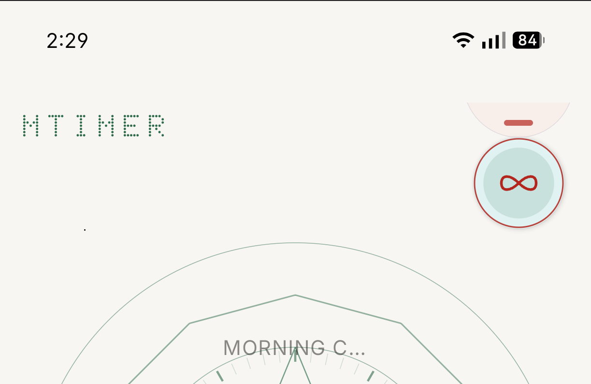
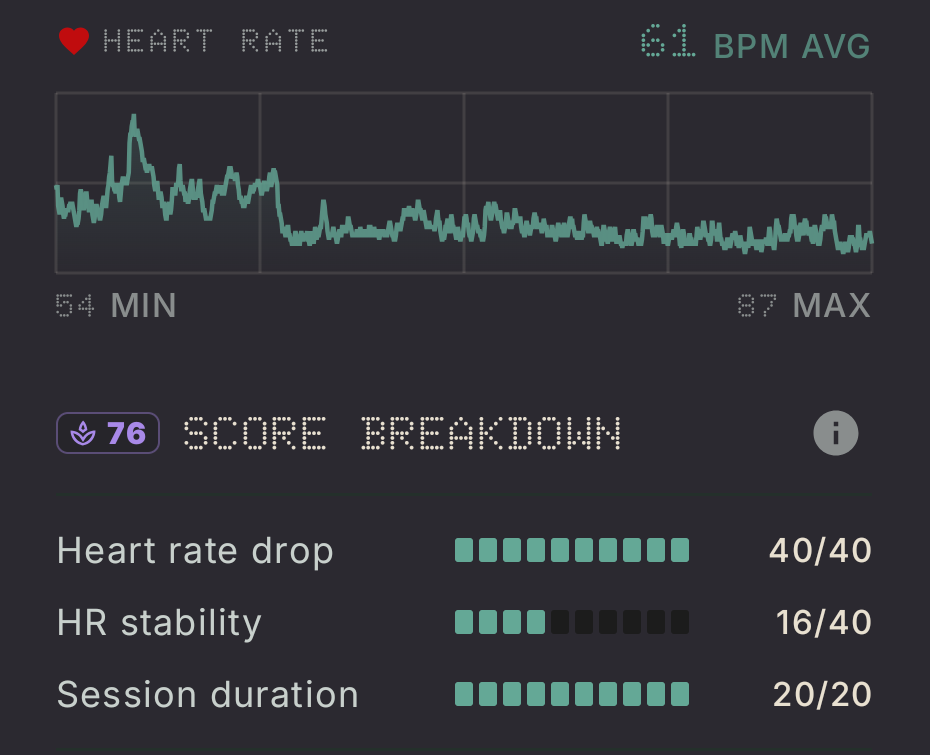

OPERATING THE DIAL
MTimer is designed to be set by feel. The interface follows a "Tactile HUD" philosophy.
SELECT DURATION
Rotate the outer dial to set your primary sitting time. For a fixed session, align the desired minutes with the horizontal dock at 3 o'clock. Tapping the center pivot will arm the sequence.

ARM & EDIT
Once started, the "Preparation Phase" begins. The HUD will count down (standard 10s delay), allowing you to assume your posture and settle your breath before the starting bell rings. You can edit the presets in the manage settings section of the settings page.

THE INFINITY GUARD
To sit without a set timer, swipe up on the bottom guard to reveal the Infinity Button. A long-press (1.5s) is required to start and end these sessions, ensuring every action is intentional.

BIOMETRIC CALIBRATION
The "Calm Score" is a unique metric that measures your physiological settling.
By connecting to Health Connect, MTimer reads your heart rate samples during the session. It calculates the drop relative to your baseline and the stability of your heart rhythm. This data never leaves your device—the analysis is 100% local.

TECHNICAL FAQ
WHY WASN'T MY SESSION SAVED?
MTimer ignores sessions shorter than 61 seconds to keep your data clean from "false starts" or accidental taps.
HOW DO I RESTORE PRESETS?
Enable Cloud Sync in settings. MTimer uses your personal Google Drive (hidden app folder) to keep your configurations synchronized.
PORTAL & CONTACT
MTimer is a proprietary software instrument developed by gnaanaa. We are committed to a zero-tracking, local-first future.
Support: support@gnaanaa.com